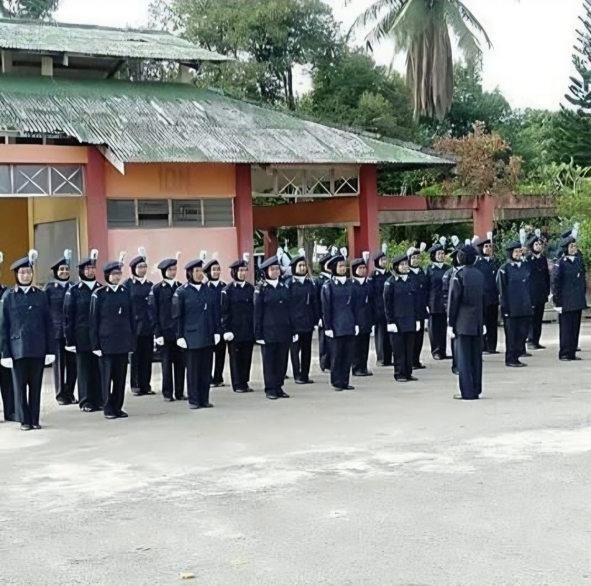
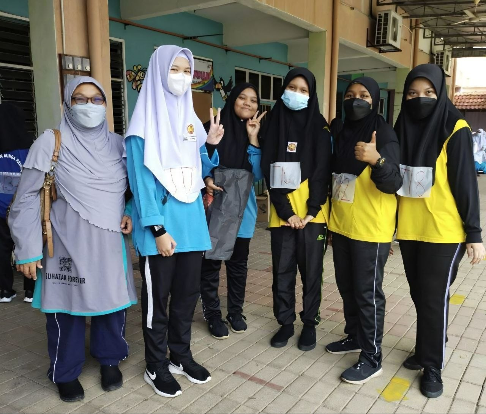
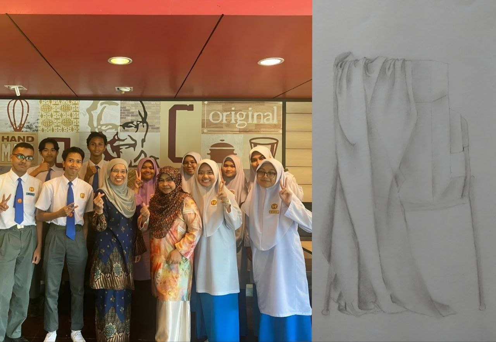
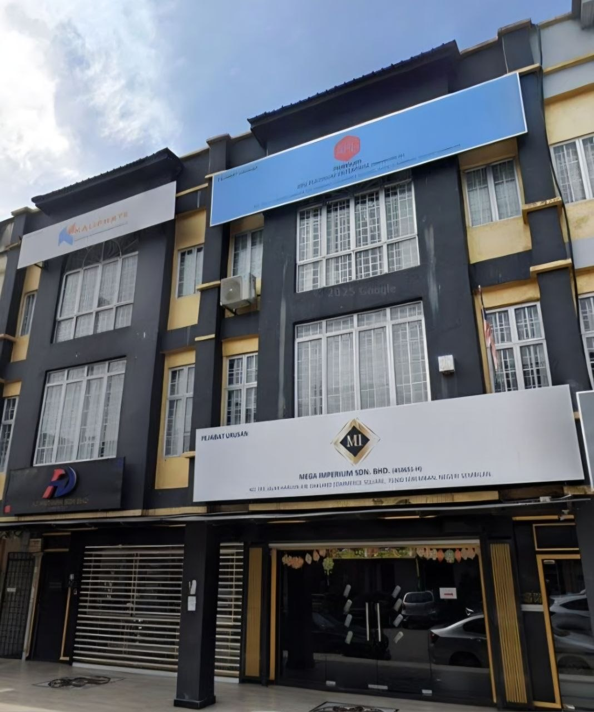

During my high school years, I actively participated in Kadet Polis co-curricular activities. I was involved in marching competitions (kawad kaki), leadership activities, and discipline-based training programs. One of my proudest achievements was winning 1st Place in a marching competition with my team. This experience strengthened my teamwork, responsibility, self-confidence, and leadership skills while teaching me the importance of discipline, commitment, and cooperation in achieving success.

I participated in several marathon and running events that promoted a healthy and active lifestyle. Through these activities, I developed endurance, determination, and self-discipline while learning the importance of setting goals and maintaining physical fitness. Participating in marathons also strengthened my perseverance and ability to stay motivated when facing challenges.

I actively participated in drawing competitions during my school years, where I had the opportunity to showcase my creativity and artistic skills. Through these competitions, I learned how to express ideas visually, improve attention to detail, and manage time effectively while completing artwork within given deadlines. This experience also strengthened my confidence, creativity, and problem-solving abilities.

I completed my industrial training at Mega Imperium Sdn. Bhd. under the Human Resources and Administration Department. During the internship, I assisted in document management, employee record filing, administrative tasks, and office operations. This experience enhanced my professional skills, organizational abilities, and understanding of workplace practices.